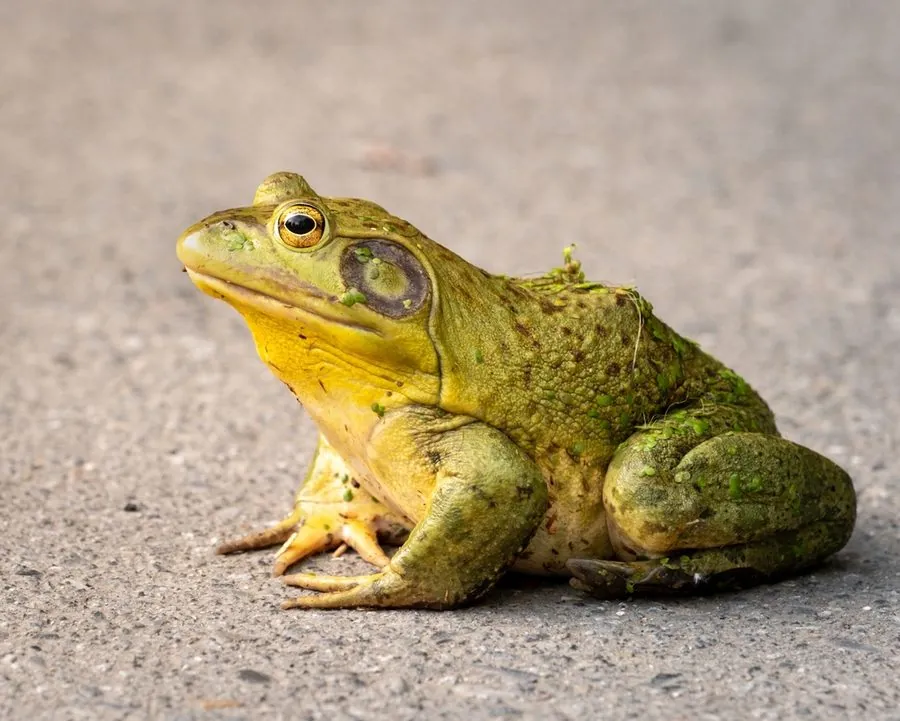

两栖动物 · 动物界
牛蛙 Lithobates catesbeianus

原产北美的巨型蛙类，鸣声低沉如牛，因肉质鲜美被引入世界各地养殖，在中国已成为外来入侵物种。
- 分类
- 门脊索动物门纲两栖纲目无尾目科蛙科属蛙属
- 栖息环境
- 池塘、湖泊、沼泽、缓流河道及人工养殖池
- 地理分布
- 原产北美东部；中国多地养殖并已形成野外入侵种群
- 保护级别
- IUCN 无危（LC）；中国外来入侵物种，无保护级别
物种志
牛蛙体长 15–20 厘米，体重 300–800 克，个别可达 1 千克以上，是体型很大的蛙类。它头部宽扁，吻端钝圆，背部皮肤粗糙，呈绿褐色或黄绿色并带深色斑纹，腹面灰白；后肢粗壮，趾间蹼发达，游泳能力强；雄性咽部黄色、鼓膜大，繁殖期发出低沉的“哞哞”声，酷似牛叫。
牛蛙原产于北美东部，栖息于池塘、湖泊、沼泽和缓流河道，性情凶猛，捕食昆虫、鱼、虾、蛇、小鸟甚至其他蛙类的幼体。每年 4–7 月繁殖，雌蛙一次产卵可达 2 万枚，卵块漂浮水面，4–7 天孵化，蝌蚪经 3–5 个月变态。它因肉质鲜美被引入包括中国在内的许多国家养殖，逃逸个体在野外建立种群后挤占本土蛙类资源，被列为全球百大入侵物种之一，在中国属外来入侵物种，不可随意放生。
形态与习性
- 食性昆虫、鱼、虾、小鸟、蛇及其他蛙类
- 体长15–20 cm
- 体重300–800 g，最大可达 1 kg 以上
- 寿命约 7–10 年
- 繁殖卵生，一次约 2 万枚，4–7 天孵化
- 活动节律多在夜间活动，白天伏于水边
- 入侵性被列为全球百大入侵物种之一，会捕食本土蛙类
趣味知识
- 牛蛙的鸣声低沉浑厚，远听像牛在叫，“牛蛙”之名由此而来。
- 牛蛙食性极广，连小鸟、蝙蝠和同类幼体都可能成为它的猎物。
- 中国野外牛蛙多源自养殖逃逸或被放生个体，会挤占本土蛙类生存空间。